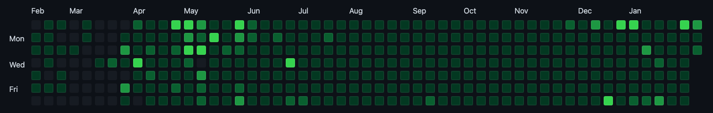
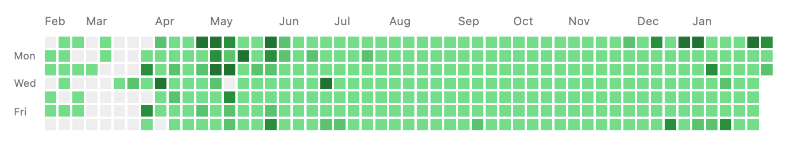

GitHub 커밋 그래프(GitHub Contributions Graph) 보여주기
TL;DR
<img src="https://ghchart.rshah.org/jamesujeon"/>한줄로 나의 잔디를 표현할 수 있다.<img src="https://ghchart.rshah.org/219138/jamesujeon"/>와 같이 기준 색을 지정할 수도 있다.
GitHub Contributions Graph

GitHub를 사용하는 사람이라면 누구나 한번쯤 위와 같은 GitHub Contributions Graph를 본 적이 있을 것이다. 그리고 많은 개발자가 이 초록색 네모(일명 잔디)를 채우기 위해 하루하루 코딩을 한다. 이렇게 채운 네모는 코딩을 더 열심히 하게 자극을 주는 동기부여가 된다.
GitHub Contributions Graph를 많이 채웠으면 그것을 누군가에게 자랑을 하고 싶기도 하고, 스스로 보며 뿌듯함을 느끼고 싶기도 할 것이다. 그러기 위해 블로그에 그 그래프를 연동하기도 하는데, 최근에 괜찮은 오픈 소스를 발견해 그것을 이용해 About 페이지를 꾸몄다.
Github Chart API 연동
그래프를 보여주기 위해 사용한 오픈 소스는 Github Chart API라 불리는 그래프 이미지 생성 API이다.
Github Chart API는 GitHub 계정으로부터 Contributions 데이터를 불러와 이미지 파일을 생성하고 호스팅을 통해 이미지 파일을 제공해준다. 이미지 파일은 SVG이기 때문에 화면 크기에 맞춰 적절하게 보여질 수 있으며, 원하는 기준 색을 지정해 네모(일명 잔디)의 색을 바꿀 수 있다.
사용법은 정말 간단하다.
다음 코드와 같이 img 요소의 이미지 파일 경로로
호스팅 사이트(https://ghchart.rshah.org) 뒤에 GitHub 계정명을 덧붙인 경로를 전달하면 된다.
<img src="https://ghchart.rshah.org/jamesujeon"/>앞서 얘기한 것처럼 기준 색을 지정하고 싶다면, 다음 코드와 같이 GitHub 계정명 앞에 16진수 색상 코드를 덧붙이면 된다.
<img src="https://ghchart.rshah.org/219138/jamesujeon"/>위 코드를 적용한 About 페이지의 이미지는 다음과 같다.

해당 이미지는 현재의 GitHub 데이터를 기준으로 하기 때문에 최신 이미지가 유지될 수 있다. 물론, 이미지 파일이 캐싱되어 이전 상태의 이미지가 보일 수 있으니 그런 경우 캐시를 제거하고 확인해 봐야 한다.
Github Chart API에서 생성하는 이미지 파일은 GithubChart라 하는 다른 오픈 소스로부터 생성된 것이다. 만약, 이미지 파일을 생성하는 로직이 궁금하거나 해당 루비 라이브러리를 직접 연동하고 싶은 경우, GithubChart를 참고하면 도움이 될 것이다.
얼른 한줄의 코드를 통해 자신의 GitHub Contributions Graph를 뽐내도록 하자! 😎